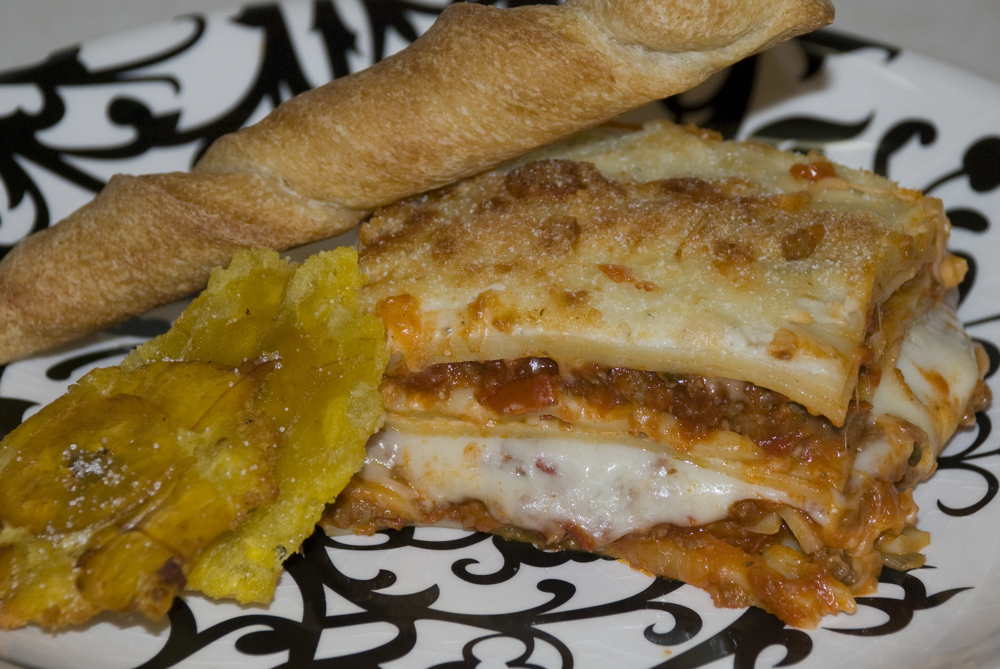

Pasticho Rico

Pasticho is a delicious version of lasagna that is very popular in Venezuela. Its origins come from the Mediterranean, where a similar dish called pastitsio is made with tubular pasta and lots of creamy béchamel sauce. In Venezuela, pasticho is prepared with regular lasagna noodles layered alternately with a tomato-based meat sauce and béchamel sauce, with cheese and sometimes ham interspersed within the layers. It requires an extra cooking step, but it's well worth it.
Ingredients
For the red sauce
- 1 large onion, chopped
- 3 gloves garlic, minced
- 1 pound ground beef
- 1 tablespoon soy sauce
- 1 tablespoon Worcestershire sauce
- 1 (28-ounce) can stewed tomatoes
- 1 (6-ounce) can tomato paste
- 1 teaspoon dried oregano
- 1 teaspoon dried basil
- 1 bay leaf
- 1 tablespoon sugar
- 1/2 cup red wine, or beef stock
For the Bechamel sauce
- 1/2 cup (4 ounces) unsalted butter
- 1/2 cup all-purpose flour
- 4 1/2 cups milk
- Salt, to taste
- Freshly ground black pepper, to taste
- 1/2 cup grated Parmesan cheese
- 10 ounces mozzarella cheese, grated
- 1/2 cup grated Parmesan cheese
- 1/4 teaspoon nutmeg, optional
Preparation
- Gather the ingredients.
- Preheat oven to 350 F.
- Cook the lasagna noodles according to package directions. Drain, rinse with cool water and set aside.
Make the red sauce
- Heat 2 tablespoons olive oil in a large skillet or stockpot. Add onions and garlic, and cook over low-medium heat until soft and fragrant.
- Add ground beef, soy sauce, and Worcestershire sauce and cook, stirring, until meat is well-browned.
- Add stewed tomatoes, tomato paste, oregano, basil, bay leaf, sugar, and red wine or stock. Simmer over very low heat until sauce thickens and develops a rich flavor, about 30 to 45 minutes. Taste for seasoning, and season with salt and pepper to taste.
- While the red sauce is simmering, prepare the béchamel sauce: Place the butter in a heavy saucepan, and melt it over medium-low heat. Whisk in the flour, and cook until butter/flour mixture is bubbly.
- Whisk the milk into the butter/flour mixture, and cook over medium heat, stirring constantly, until sauce thickens. Add salt, nutmeg (optional) and Parmesan cheese, and stir until smooth. Taste for seasoning, and season with salt and pepper to taste.
Assemble Pasticho
- Spread a thin layer of béchamel sauce on the bottom of a 9 x 13-inch baking pan. Cover with a layer of lasagna noodles.
- Cover the noodles with a layer of one-third of the meat sauce.
- Top meat sauce with another layer of noodles. Spread another, thicker layer of béchamel sauce (about 1 cup) on top of the noodles then sprinkle 1/3 of the mozzarella cheese and a couple of tablespoons of Parmesan cheese over the béchamel.
- Repeat with another meat sauce layer then another béchamel and cheese layer. Repeat with one more meat sauce layer; top with a final layer of noodles then spread the remaining béchamel over the noodles, and sprinkle remaining mozzarella and Parmesan cheese over the top.
- Cover the lasagna with a piece of foil and bake, covered, for 30 minutes. Remove foil, and continue to bake until cheese is melted and lasagna is heated through and bubbly. Let cool for 5 to 10 minutes before serving.